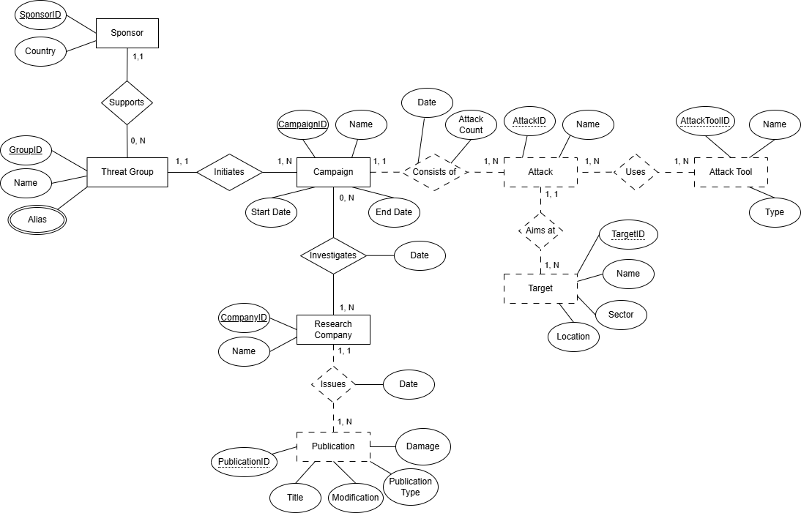
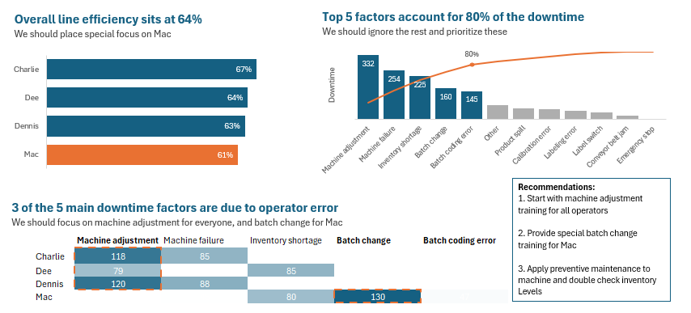
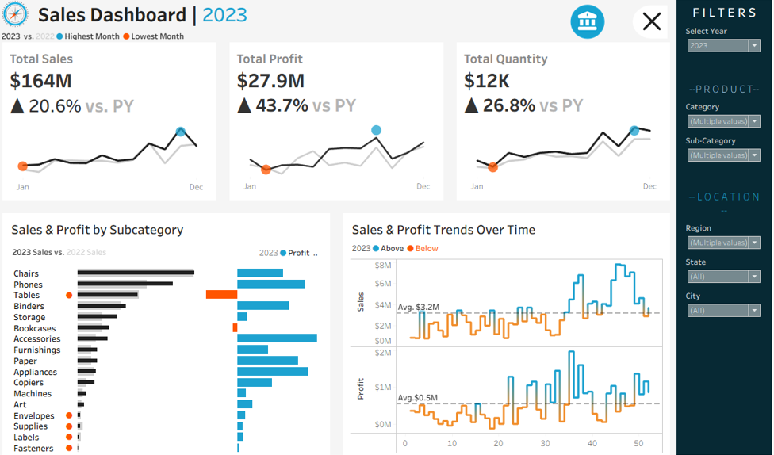
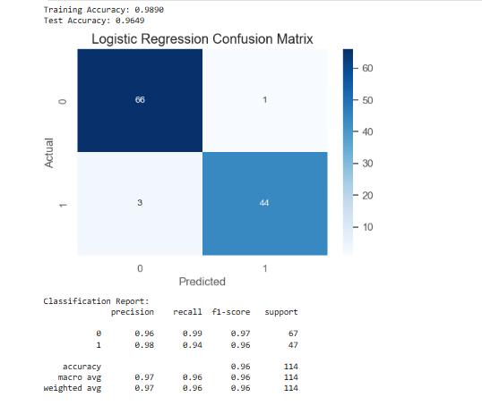
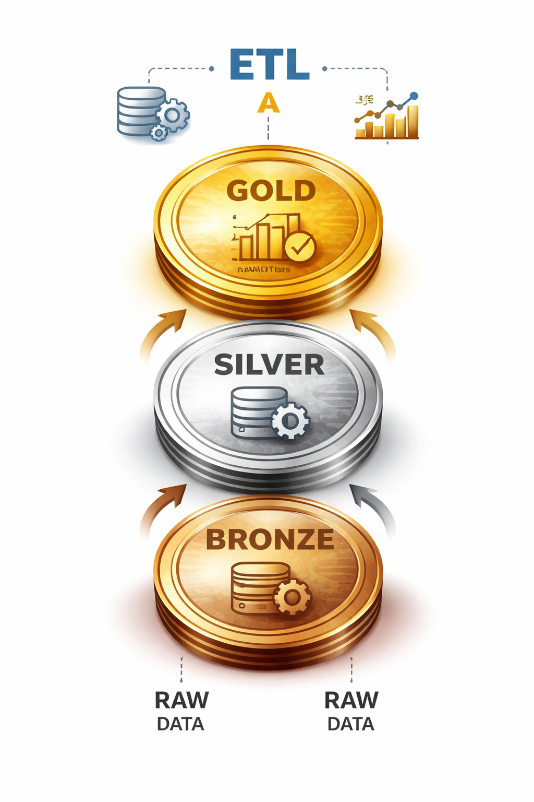

Hi, it's Lala
I'm an aspiring
Data & Systems Professional
I'm a 3rd-year BSc Information Systems student passionate about data, systems, and solving real business problems. I enjoy exploring how data can uncover insights, drive smarter decisions, and improve business processes. Currently focused on building skills in data analysis, BI, and data engineering.

About Me
I’m an Information Systems student passionate about technology, data, and creative problem-solving. I enjoy learning about information systems, databases, exploring ETL processes, and working with data in my academic and personal projects. Creating dashboards and visualizations to make data come to life excites me, as does understanding how IT systems and cybersecurity support business processes. I thrive at the intersection of technical thinking and creativity, and I’m always eager to learn, adapt, and tackle new challenges.
Skills:
- Python (pandas, NumPy, data analysis libraries)
- SQL & relational databases
- ETL processes & data management
- Data visualization (Tableau, Excel)
- Cybersecurity concepts and practices
- Analytical & problem-solving thinking
- Creative problem-solving & adaptability
Projects

CyberThreats Database
Designed a relational database modeling threat groups, campaigns, tools, and research entities. Created ER diagrams and SQL schemas with primary/foreign keys, and wrote queries to explore and retrieve data across multiple entities.
Review Project
Manufacturing Downtime Analysis
Analyzed bottling line efficiency and downtime using Excel (PivotTables, XLOOKUP, KPIs, Pareto analysis) to identify key issues and deliver actionable operational recommendations.
Review Project
Sales Performance Dashboard
Built an interactive Tableau dashboard with YoY KPIs, monthly/weekly trends, and product subcategory comparisons. Designed dashboards for executives with calculated fields, reference lines, and trend highlights.
Review Project
Breast Cancer Classifier
Performed EDA, data preprocessing, and feature selection on the Breast Cancer Wisconsin dataset. Applied multiple ML models (Logistic Regression, KNN, SVM, Decision Tree), with SVM achieving 98.25% test accuracy.
Review Project
Data Warehouse & ETL
Studied core data warehousing and ETL concepts through a guided self-learning project. Implemented SQL-based data transformations, performed data validation, and explored schema design along with data flow across bronze, silver, and gold layers.
Review Project